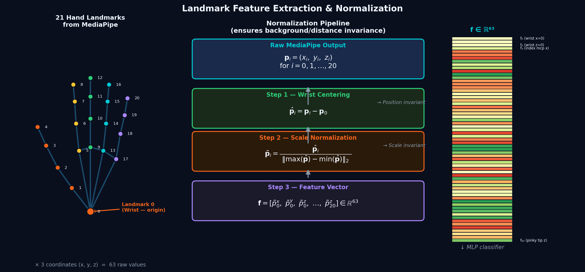
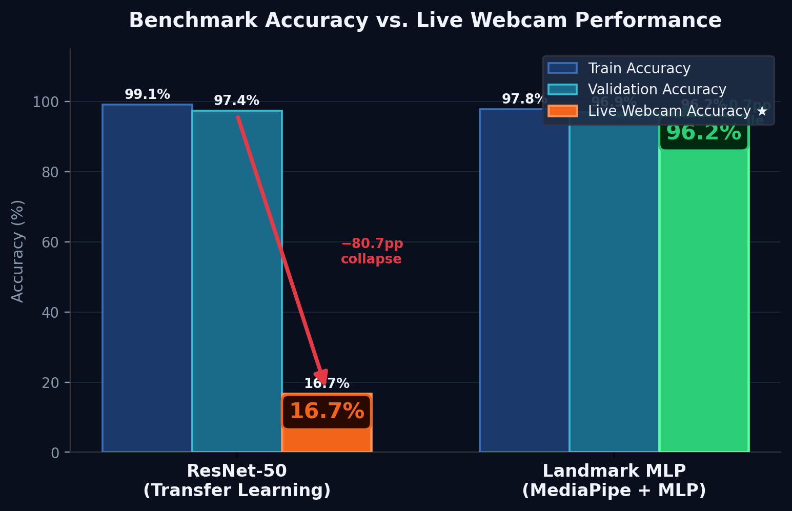
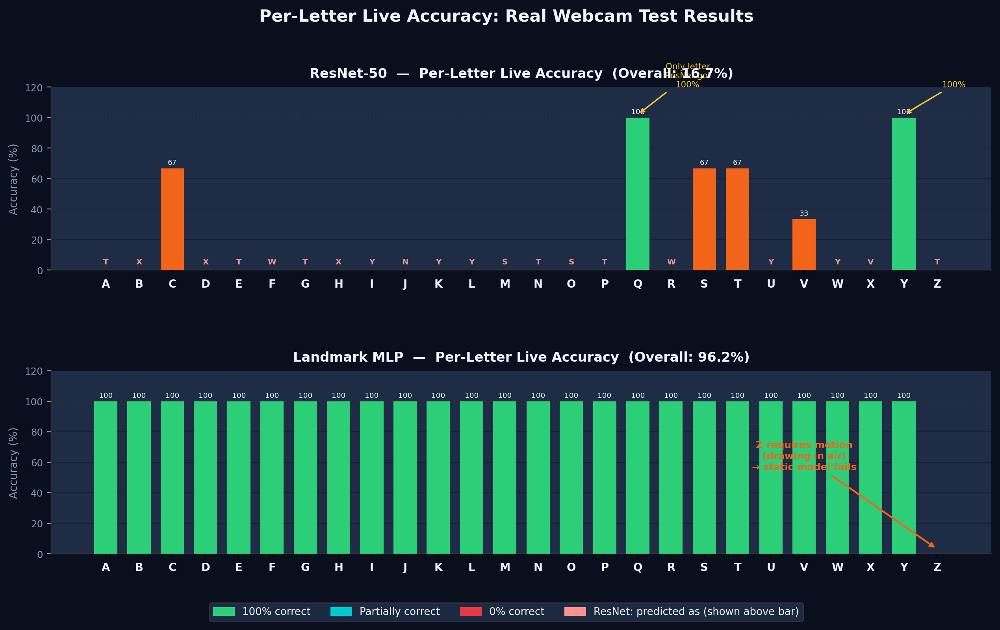
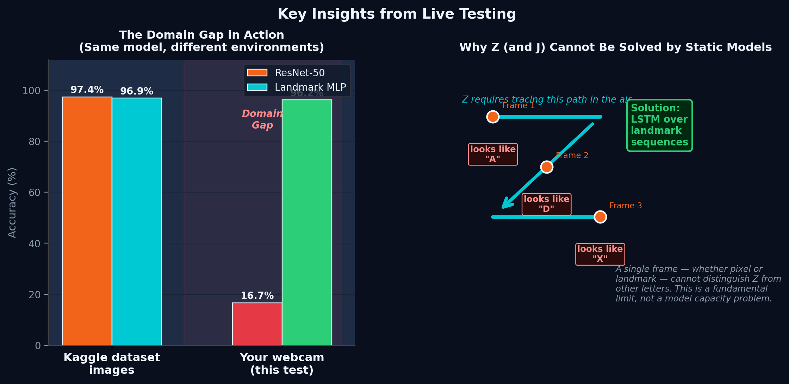

Introduction & Motivation
- Problem: Standard ASL models trained on curated datasets (like Kaggle) often fail completely when deployed to live webcam environments.
- Goal: Investigate and quantify this "domain gap" by testing two fundamentally different architectures in a real-world setting.
- Motivation: To build an edge-capable, robust ASL translator that works for diverse users regardless of background noise, lighting, or camera quality.
Methodology
- Model A (ResNet-50): Convolutional Neural Network utilizing Transfer Learning. Trained directly on static dataset images (pixels).
- Model B (Landmark MLP): A lightweight Multi-Layer Perceptron trained exclusively on 3D hand coordinates.
- Tools Used: MediaPipe for landmark extraction, PyTorch for model building.
- Design Choice: Designed a geometric normalization pipeline to make Model B mathematically invariant to screen position and scale.

Results
- The Collapse: ResNet-50 achieved 97.4% on validation data but suffered an 80.7% drop in the live webcam test.
- The Solution: The Landmark MLP maintained a robust 96.2% live accuracy.

- Per-Letter Analysis: ResNet-50 exhibited widespread confusion due to background discrepancies. The MLP correctly identified almost all static letters.

Conclusion
- Standard CNNs overfit to dataset-specific pixel data (lighting, backgrounds), creating a severe domain gap.
- Stripping away pixel data and using normalized geometric landmarks effectively solves the domain gap for static sign language recognition.
- The resulting MLP is highly efficient (< 1MB) and capable of sub-millisecond inference.
Future Work
- Addressing Dynamic Signs: The MLP currently fails on letters 'Z' and 'J' because they require motion context.
- Next Steps: Transition from static frame analysis to sequence modeling (e.g., LSTMs or Transformers) to track landmark paths over time.

References
- [1] He, K., et al. "Deep Residual Learning for Image Recognition" (CVPR 2016).
- [2] Lugaresi, C., et al. "MediaPipe: A Framework for Building Perception Pipelines."
- [3] Kaggle ASL Alphabet Dataset. [Insert specific author/URL here]